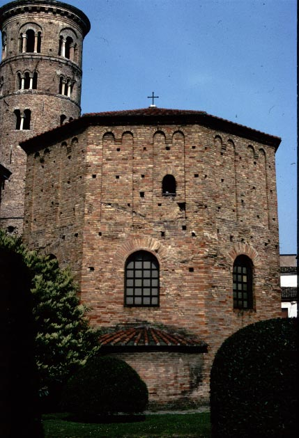
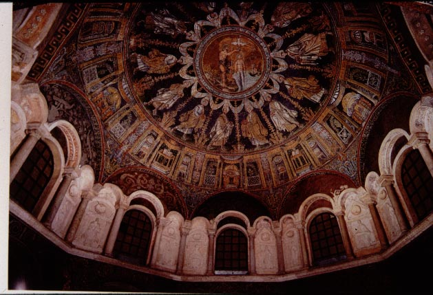
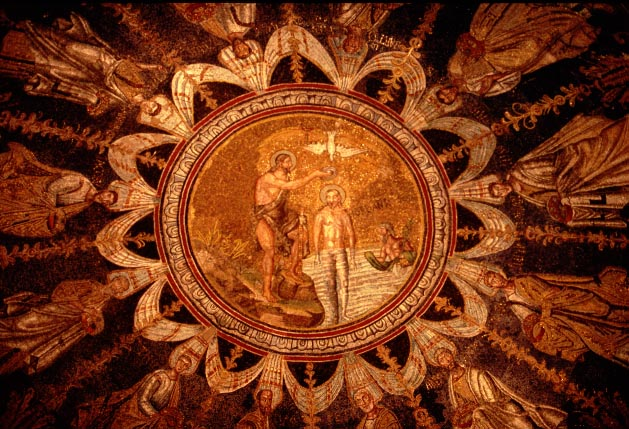

Orthodox Cathedral and Baptistry
According to legend, Ravenna's first bishop was Apollinaris, a
disciple
of St. Peter, who came to Ravenna around 70 AD. Archaeological
evidence
shows that there were Christians around Ravenna only from the end of
the
second century, around 170 AD. The first definite mention of a
bishop
of Ravenna comes from the year 343.
According to tradition, the cathedral was built around 400, thus
right
at the time that the city became the capital of the western Roman
empire.
The cathedral existed in its original form until the sixteenth century,
when it was destroyed and replaced by a new structure.
The baptistry, a building used specifically for baptism (remember
that
in this period, adults rather than infants were more likely to be
baptised),
was built a few decades later, in the 430's. It was octagonal in
ground plan, a traditional form for baptistries. The baptistry
survives with its original decoration intact.

Diagram of the cathedral (the large rectangular building), with the
baptistry (C) to the north.
The round building (D) on the north side is the bell tower, built in
the eleventh century.

Exterior view of the baptistry, with the eleventh century bell-tower
in the background.

Mosaic and stucco decoration of the domed interior of the baptistry
(see detail below)

Detail of the dome mosaic, showing the baptism of Christ by John the
Baptist
(this was directly overhead, above the font). The figures
marching
around
the central scene are the twelve apostles.